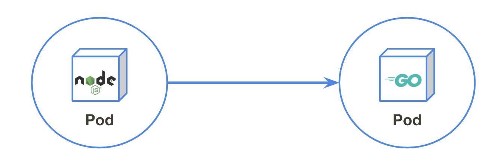
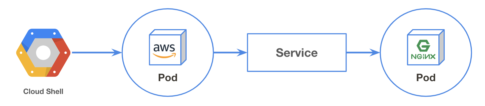
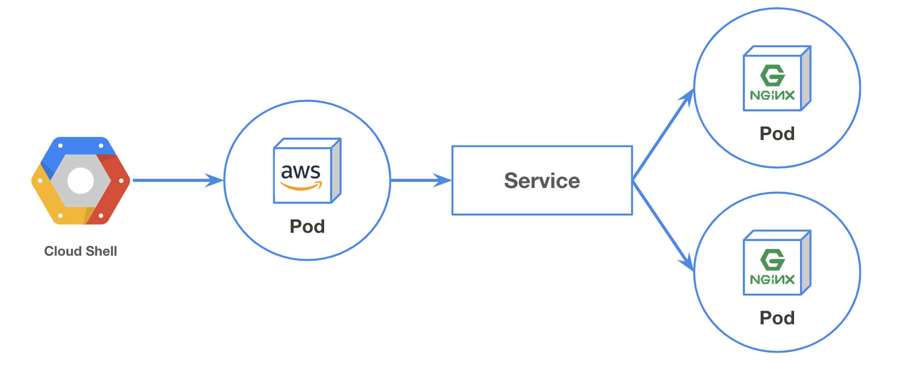

Service

Serviceとは¶
Serviceはサービスディスカバリを提供するObjectです。
サービスディスカバリとは、例えばフロントエンドからバックエンドのサービスに接続したいとき、フロントエンドはバックエンドサービスのエンドポイントを知る必要があります。
PodにはPrivate IP が付与されますが、（以下のように）Podは新規作成/削除されると動的にIPが変わります
$ kubectl create deploy myapp --image nginx deployment.apps/myapp created $ kubectl get pod -o wide NAME READY STATUS RESTARTS AGE IP NODE NOMINATED NODE myapp-ddb58c99-ldw8t 1/1 Running 0 17s 10.0.2.15 gke-standard-cluster-1-default-pool-0423aa15-rbfv <none> $ kubectl delete pod myapp-ddb58c99-ldw8t pod "myapp-ddb58c99-ldw8t" deleted $ kubectl get pod -o wide NAME READY STATUS RESTARTS AGE IP NODE NOMINATED NODE myapp-ddb58c99-gxs65 1/1 Running 0 10s 10.0.2.16 gke-standard-cluster-1-default-pool-0423aa15-rbfv <none> $ kubectl delete deploy myapp
KubernetesはこういったPod間の疎通の手段として Service というObjectを用意しています。
Serviceを使用することでPodへの固定されたエンドポイントを提供してくれます。
このドキュメントは「手を動かして入門する」ことをテーマとしているため、まずは実際にServiceを作成してみましょう
Serviceを作成する¶

実際にServiceを作成し、そのエンドポイントに対してアクセスしてみましょう
まずはnginxを使用してDeploymentを作成します。
$ kubectl create deploy mynginx --image nginx deployment.apps/mynginx created
作成したnginxのPodに対してServiceを作成し、エンドポイントを作成します。
$ kubectl expose deployment mynginx --port=80 --target-port=80 service/mynginx exposed
これでServiceの作成は完了です。
Serviceが作成され、エンドポイント(CLUSTER-IP)が作成されているか確認しましょう。
$ kubectl get service NAME TYPE CLUSTER-IP EXTERNAL-IP PORT(S) AGE kubernetes ClusterIP 10.3.240.1 <none> 443/TCP 2d10h mynginx ClusterIP 10.3.255.103 <none> 80/TCP 27s
Pod間の疎通が可能か確認します。
クラスタ内にAmazonLinuxイメージを使用してPodを立ち上げ、作成されたエンドポイント("CLUSTER-IP")へアクセスしてみましょう。
$ kubectl run --rm --restart Never --image amazonlinux:2 -it -- sh If you don't see a command prompt, try pressing enter. # curl <CLUSTER-IP>:80 <!DOCTYPE html> <html> <head> <title>Welcome to nginx!</title> : # exit
Serviceは作成時にDNSが自動的に割り当てられます。
今回は"mynginx"と命名をしたので、"mynginx.default.svc.cluster.local"が割り当てられます。
$ kubectl run --rm --restart Never --image amazonlinux:2 -it -- sh If you don't see a command prompt, try pressing enter. # yum install -y bind-utils : # dig mynginx.default.svc.cluster.local : ;; ANSWER SECTION: mynginx.default.svc.cluster.local. 30 IN A 10.3.255.103 :
curlもしてみましょう。
# curl mynginx.default.svc.cluster.local:80 <!DOCTYPE html> <html> <head> <title>Welcome to nginx!</title> : # exit
DNSの命名規則
DNSは以下の通りの命名規則で割り当てられます。
<Service名>.<Namespace名>.svc.cluster.local
Service名は kubectl expose で指定した名前になります。
Namespaceは環境（本番やステージングなど）を分ける際に使用します。何も指定しない場合は"default"という名前の環境が使用されます。
また、同一Namespace内であればService名だけでアクセスすることも可能です。 e.g. curl mynginx:80
おまけ¶
Podの更新¶
PodのIPが変わっても同一のエンドポイントでアクセスできるか確認します。
既存のPodのIPを確認します。
$ kubectl get pods -o wide NAME READY STATUS RESTARTS AGE IP NODE NOMINATED NODE mynginx-784f9847d4-nf9ns 1/1 Running 0 36s 10.0.2.26 gke-standard-cluster-1-default-pool-0423aa15-rbfv <none>
Serviceのエンドポイントへアクセスしてみます。
$ kubectl run amazonlinux2 --rm --restart Never --image amazonlinux:2 -it -- curl -I mynginx.default.svc.cluster.local:80 HTTP/1.1 200 OK Server: nginx/1.17.1 Date: Fri, 12 Jul 2019 17:21:41 GMT Content-Type: text/html Content-Length: 612 Last-Modified: Tue, 25 Jun 2019 12:19:45 GMT Connection: keep-alive ETag: "5d121161-264" Accept-Ranges: bytes pod "amazonlinux2" deleted
次に、Podに付与されたIPを直接叩いてみましょう。
$ kubectl run amazonlinux2 --rm --restart Never --image amazonlinux:2 -it -- curl -I 10.0.2.26:80 HTTP/1.1 200 OK Server: nginx/1.17.1 Date: Fri, 12 Jul 2019 17:24:40 GMT Content-Type: text/html Content-Length: 612 Last-Modified: Tue, 25 Jun 2019 12:19:45 GMT Connection: keep-alive ETag: "5d121161-264" Accept-Ranges: bytes pod "amazonlinux2" deleted
Podを削除してみましょう。
IPが更新されるはずです。
$ kubectl get pods -o wide NAME READY STATUS RESTARTS AGE IP NODE NOMINATED NODE mynginx-784f9847d4-nf9ns 1/1 Running 0 36s 10.0.2.26 gke-standard-cluster-1-default-pool-0423aa15-rbfv <none> $ kubectl delete pod mynginx-784f9847d4-nf9ns pod "mynginx-784f9847d4-nf9ns" deleted $ kubectl get pods -o wide NAME READY STATUS RESTARTS AGE IP NODE NOMINATED NODE mynginx-784f9847d4-czbsm 1/1 Running 0 5s 10.0.2.50 gke-standard-cluster-1-default-pool-0423aa15-rbfv <none>
$ kubectl run amazonlinux2 --rm --restart Never --image amazonlinux:2 -it -- curl -I mynginx.default.svc.cluster.local:80 HTTP/1.1 200 OK Server: nginx/1.17.1 Date: Fri, 12 Jul 2019 17:36:50 GMT Content-Type: text/html Content-Length: 612 Last-Modified: Tue, 25 Jun 2019 12:19:45 GMT Connection: keep-alive ETag: "5d121161-264" Accept-Ranges: bytes pod "amazonlinux2" deleted
Podのスケールアウト¶

Serviceは複数のPodを紐付けることが可能です。
先ほど作成したnginxのDeploymentを2台にスケールアウトして、アクセスログを確認してみましょう。
$ kubectl scale --replicas=2 deployment mynginx deployment.extensions/mynginx scaled $ kubectl get pods NAME READY STATUS RESTARTS AGE mynginx-784f9847d4-2kg9f 1/1 Running 0 12s mynginx-784f9847d4-czbsm 1/1 Running 0 11m
何度かcurlを打ってからPodのログを確認してみましょう
$ kubectl run amazonlinux2 --rm --restart Never --image amazonlinux:2 -it -- curl -I mynginx.default.svc.cluster.local : : : $ kubectl get pods NAME READY STATUS RESTARTS AGE mynginx-784f9847d4-2kg9f 1/1 Running 0 18m mynginx-784f9847d4-czbsm 1/1 Running 0 30m $ kubectl logs mynginx-784f9847d4-2kg9f 10.0.2.56 - - [12/Jul/2019:17:39:15 +0000] "GET / HTTP/1.1" 200 612 "-" "curl/7.61.1" "-" 10.0.2.56 - - [12/Jul/2019:17:39:39 +0000] "GET / HTTP/1.1" 200 612 "-" "curl/7.61.1" "-" 10.0.2.59 - - [12/Jul/2019:17:44:55 +0000] "HEAD / HTTP/1.1" 200 0 "-" "curl/7.61.1" "-" 10.0.2.61 - - [12/Jul/2019:17:45:19 +0000] "HEAD / HTTP/1.1" 200 0 "-" "curl/7.61.1" "-" 10.0.2.65 - - [12/Jul/2019:17:51:15 +0000] "HEAD / HTTP/1.1" 200 0 "-" "curl/7.61.1" "-" 10.0.2.69 - - [12/Jul/2019:17:51:25 +0000] "HEAD / HTTP/1.1" 200 0 "-" "curl/7.61.1" "-" $ kubectl logs mynginx-784f9847d4-czbsm 10.0.2.53 - - [12/Jul/2019:17:36:50 +0000] "HEAD / HTTP/1.1" 200 0 "-" "curl/7.61.1" "-" 10.0.2.63 - - [12/Jul/2019:17:51:11 +0000] "HEAD / HTTP/1.1" 200 0 "-" "curl/7.61.1" "-" 10.0.2.67 - - [12/Jul/2019:17:51:19 +0000] "HEAD / HTTP/1.1" 200 0 "-" "curl/7.61.1" "-" 10.0.2.71 - - [12/Jul/2019:17:51:35 +0000] "HEAD / HTTP/1.1" 200 0 "-" "curl/7.61.1" "-"
お片付け¶
Serviceの削除
$ kubectl delete service mynginx
Deploymentの削除
$ kubectl delete deployment mynginx